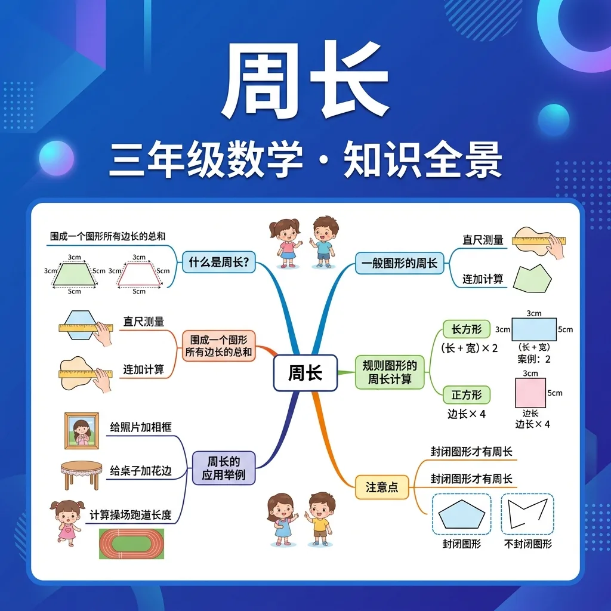

🌍 And（已知）：你已经掌握了一些基础知识
⚡ But（问题）：遇到更复杂的情况还不够用
💡 Therefore（新知）：学习今天的内容，让能力更完整、更系统
在学习新内容之前，先测测你的基础知识！
Q1：正方形有几条边？
Q2：什么是"封闭图形"？
周长是围成一个图形的所有边的总长度。
长方形有两条长和两条宽。
例：长6cm，宽4cm
周长 = 2×(6+4) = 20cm
正方形四边相等。
三角形三边之和。
各边长度之和。
| 图形 | 条件 | 周长公式 | 例子（单位cm） |
|---|---|---|---|
| 长方形 | 长=a, 宽=b | 2(a+b) | a=5,b=3 → C=16 |
| 正方形 | 边=a | 4a | a=6 → C=24 |
| 等边三角形 | 边=a | 3a | a=4 → C=12 |
| 一般三角形 | 三边a,b,c | a+b+c | 3+4+5=12 |
将左侧公式拖拽到对应图形右侧的框内
你已掌握周长的核心知识！
完成学习后，用这两道题检验你的掌握程度！
Q1：长4cm宽3cm的长方形，周长是多少？
Q2：边长5cm的正方形，周长是多少？
记忆口诀：长方形周长=(长+宽)×2；正方形周长=边长×4。助记：想象蚂蚁爬一圈边，走完所有边的总距离就是周长。口诀："长加宽，乘以二，长方周长记牢里；四边等长是正方，边长乘四是周长。"
⚠️ 如果你做错了，看看错在哪里：
如果你把周长公式写成(长+宽)而忘了×2，你忘了长方形有两组对边。每条边要算一次，长方形有两条长和两条宽，所以要×2。
💡 自查方法：把答案代回原题验证，如果算出矛盾就说明中间有错误！
从记忆→理解→应用→分析，逐步深化你的理解！
📌 记忆层（识别）：选出下面哪个是周长的正确说法：
比较：周长和面积有什么区别？
🔍 理解层（解释）：用自己的话解释概念，并比较区别
计算：一个长8cm宽5cm的长方形，周长是多少？
⚡ 分析层（判断）：判断以下说法是否正确，并说明理由
分析：为什么正方形周长公式是边长×4而不是边长×3？
💡 背后的原理
🔍 本质：周长是"一维"的量（长度），面积是"二维"的量（面积）。蚂蚁沿边爬一圈的距离=周长；给图形铺满地毯所需的大小=面积。
周长是指一个封闭图形边缘的总长度。想象一下，如果我们用一根绳子沿着图形的边缘绕一圈，这根绳子的长度就是周长。例如，一个正方形的周长就是四条边的长度之和。如果每条边长5厘米，那么周长就是5×4=20厘米。生活中，周长的概念无处不在，比如围栏的长度、相框的边框总长等。理解周长的概念是学习几何的基础，它帮助我们计算物体边缘的总长度，为后续的面积和体积学习打下基础。
周长的单位与长度的单位相同，常用的有毫米（mm）、厘米（cm）、米（m）和千米（km）。选择合适的单位取决于图形的大小。例如，计算一张课桌的周长可以用厘米，而计算操场跑道的周长则用米更合适。在实际应用中，单位的一致性非常重要。如果一条边是5厘米，另一条是50毫米，需要统一为厘米或毫米后再计算。例如，50毫米=5厘米，这样两条边相加时单位一致，避免错误。
规则图形（如正方形、长方形、等边三角形）的周长可以通过公式快速计算。正方形的周长=边长×4，长方形的周长=（长+宽）×2，等边三角形的周长=边长×3。例如，一个长方形长8厘米，宽5厘米，周长就是（8+5）×2=26厘米。这些公式简化了计算过程，但前提是必须知道图形的边长。对于不规则图形，则需要通过测量每条边的长度再相加。规则图形的周长计算是几何学习中的重要技能，广泛应用于生活和工程中。
不规则图形是指边长不全相等的图形，如一般的三角形、多边形等。计算这类图形的周长需要测量或已知每一条边的长度，然后将它们相加。例如，一个三角形有三条边，长度分别为3厘米、4厘米和5厘米，周长就是3+4+5=12厘米。在实际生活中，许多物体的周长计算都属于不规则图形，比如一块不规则形状的地毯或花园的围栏。通过分段测量再相加的方法，可以准确计算出周长。
周长和面积是几何中两个不同的概念。周长是图形边缘的总长度，而面积是图形内部的大小。例如，一个长方形长6厘米，宽4厘米，周长是（6+4）×2=20厘米，面积是6×4=24平方厘米。周长用长度单位（如厘米），面积用平方单位（如平方厘米）。学生在初学时容易混淆两者，需要明确区分。理解这一点对后续学习体积等三维概念非常重要。
周长在生活中有广泛的应用。例如，装修时需要计算墙面的踢脚线长度，这就是周长的应用。再比如，运动场的跑道长度、花园的围栏总长、礼物的包装带长度等，都需要计算周长。通过实际例子，学生可以更好地理解周长的意义和用途。此外，周长的计算还用于工程和建筑中，如计算建筑外围的装饰材料用量。这些应用展示了周长在现实中的重要性。
测量周长的工具包括直尺、卷尺、软尺等。对于规则图形，可以直接测量边长后计算。对于不规则图形，可以用软尺沿边缘绕一圈测量。例如，测量一个圆形花坛的周长，可以用卷尺绕花坛一圈读数。如果无法直接测量，可以通过已知比例或数学公式间接计算。掌握正确的测量方法对准确计算周长至关重要，尤其是在实际应用中。
周长不仅限于平面图形，立体图形的底面周长也是重要概念。例如，圆柱的底面是一个圆，其周长可以用公式C=πd计算。此外，周长的概念还可以扩展到其他学科，如生物学中细胞膜的周长、地理中湖泊的岸线长度等。理解周长的广泛性有助于学生在多学科中应用这一概念。通过扩展知识，学生可以更全面地掌握周长的意义和应用。
周长不仅存在于课本中，生活中随处可见需要测量周长的场景。比如，妈妈想给家里的圆桌铺一张桌布，就需要知道桌面的周长来购买合适尺寸的布料；学校操场跑道的长度实际上就是它的周长，体育老师会用卷尺测量一圈的长度来规划跑步训练。测量不规则物体（如树叶）的周长时，可以用绳子沿边缘绕一圈，再拉直测量绳子的长度。通过这样的实践活动，学生能直观理解‘周长是封闭图形一周的总长度’的概念，并掌握用软尺、绳子等工具测量的技巧。
周长和面积是几何中易混淆的两个概念。周长是图形边界的总长度（单位：厘米、米等），而面积是图形内部区域的大小（单位：平方厘米、平方米等）。例如，用篱笆围一个长方形菜园时，篱笆的总长度是周长；而菜园能种多少蔬菜取决于它的面积。可以通过对比两个长方形来加深理解：A长方形长5cm、宽3cm（周长=16cm，面积=15cm²），B长方形长6cm、宽2cm（周长=16cm，面积=12cm²）。两者周长相同，但面积不同，说明周长不能直接反映图形内部的大小差异。
测量周长需要根据物体形状选择合适工具。规则图形（如正方形、长方形）可用直尺测量边长后相加，例如课桌桌面四条边长度总和即为周长。不规则物体（如树叶）可用软尺或绳子绕边缘一周，再拉直测量总长度。生活中测量腰围、头围也是周长应用，如用皮尺绕腰部一圈读数。注意：测量时需紧贴物体边缘，避免悬空或重叠，单位通常用厘米或米。
周长是图形边缘的总长度，面积是图形表面的大小。例如：用篱笆围菜园，篱笆总长是周长，菜园种植范围是面积。数学上，边长为4cm的正方形，周长=4×4=16cm，面积=4×4=16cm²——数字相同但单位不同。生活例子：相框周长决定装饰条长度，相框面积决定能放多大照片。关键区别：周长用长度单位（米、厘米），面积用平方单位（平方米、平方厘米）。
1. 你能用自己的话解释什么是周长吗？2. 你知道哪些图形的周长可以用公式计算？3. 生活中哪些地方会用到周长的计算？
1. 一个正方形的边长是7厘米，它的周长是多少？2. 一个长方形长10米，宽6米，周长是多少？3. 如果一个三角形的三条边分别是5厘米、7厘米和9厘米，它的周长是多少？
常见误区：学生容易混淆周长和面积的概念，认为周长是图形内部的大小。错因：对周长和面积的定义理解不清。诊断：通过具体例子和对比练习，帮助学生明确周长是边缘长度，面积是内部大小。
迁移挑战：设计一个测量教室黑板周长的方法，并解释你的步骤和使用的工具。分析可能遇到的困难及解决方案。
先独立作答，再点选项查看对错与错因。
一个长方形篮球场长28米，宽15米，其周长是？
用篱笆围成边长为6米的正方形菜地，至少需要多长的篱笆？
两个长方形周长相同，则它们一定？
用一根120厘米长的彩带正好围成正方形相框，每条边长____厘米
答案：30
正方形周长=边长×4 → 边长=120÷4=30厘米
长方形操场周长300米，已知长是90米，宽是____米
答案：60
周长=(长+宽)×2 → 宽=(300÷2)-90=60米
关于周长的说法正确的是？
为长10米、宽6米的矩形苗圃设计围栏，现有两种方案：A.全用长2米的栏杆 B.混合使用1米和3米栏杆